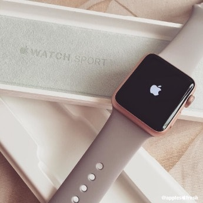
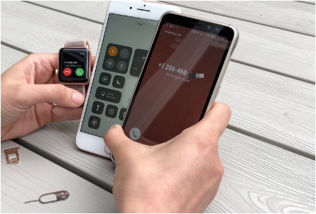
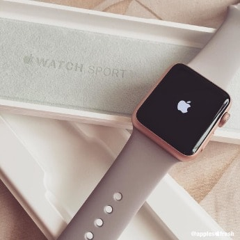
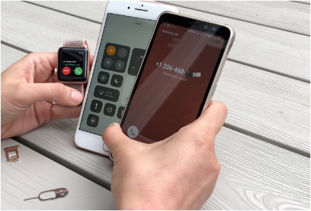

5 Lifehacků pro uživatele Apple Watch
 



Apple Watch jsou bezesporu zařízením, jehož hlavním cílem je usnadnit svým uživatelům život. My se dnes podíváme na pět tipů, které vám dokáží život s Apple Watch usnadnit ještě víc. Ne každá rada níže musí vyhovovat každému, ale rozhodně se vyplatí je minimálně vyzkoušet. Jedná se o rady, které jsme sepsali po letech používání Apple Watch a věříme, že mnoho z nich dlouholetí uživatelé používají také. Je nám však také jasné, že si v následujících řádcích i zkušení uživatelé mohou najít něco co například netušili. Pojďte se tedy podívat na pět lifehacků, které vám usnadní život s Apple Watch.
Zubní kartáček – nejdůkladnější způsob čištění
Apple Watch je dobré čas od času vyčistit opravdu důkladně, a to včetně řemínku. Za důkladné čištění tentokrát nepovažujeme plivnutí a tričko, ale skutečně detailní vyčištění, díky kterému budou Apple Watch vypadat stejně, jako když jste je poprvé vybalili z krabičky. Jakmile budete na svém elektrickém zubním kartáčku měnit hlavici za novou, tu starou důkladně umyté a odložte si ji. Nic nedokáže vyčistit hodinky tak dobře jako elektrický zubní kartáček se starším nástavcem, který již nepoužíváte na zuby. Štětičky jsou dost jemné na to, aby hodinky nepoškrábaly, ale zároveň je dokáží vyčistit i v zákoutích, do kterých se ničím jiným nedostanete. Pro čištění osobně používám vodu, a právě elektrický zubní kartáček. Hodinky jsou pak skutečně perfektně čisté, a navíc tímto způsobem můžete vyčistit také gumový řemínek. Poté hodinky opláchněte čistou vodou a máte hotovo.
Nabíjejte za jízdy v autě
Osobně se mi osvědčilo nabíjet chytré hodinky především v autě. Tam totiž kromě tepu v podstatě nemají co měřit a vy si stejně notifikace a další informace z telefonu raději zobrazíte na displeji palubního počítače než na Apple Watch. Stačí tak použít USB nabíječku integrovanou ve vozidle nebo přechodku ze zapalovače, do které zapojíte klasický nabíjecí kabel k Apple Watch. Můžete využít čas na cestě k tomu, abyste hodinkám doplnili energii bez toho, aniž by vás muselo mrzet, že během dobíjení nemonitorují vaši činnost, protože se žádná stejně neodehrává. Samozřejmě je také možnost nabíjet hodinky přes noc, ovšem v tom případě se připravíte o měření spánkové aktivity, což upřímně považuji za jednu z nejdůležitějších funkcí jakýchkoli smartwatch. Navíc mě osobně vždy potěší sice nesmyslný, ale příjemný fakt, že v autě nabíjím hodinky zdarma, protože elektřina vzniká alternátorem a nemusím za ni platit. Samozřejmě nabíjení Apple Watch vás za rok stoji asi deset korun, ale i tak je pro mě potěšující.
Vypněte zvuky a udělejte hodinky skutečně osobní
Apple Watch jsou nejosobnějším zařízením, které kdy Apple vyrobil. Pokud chcete, aby bylo ještě osobnější než doposud, pak na nich vypněte všechny zvuky a nastavte si pouze vibrace pomocí haptického motorku. Hodinky tak na notifikace upozorní pouze vás a vaše okolí to jednak nevyruší, ale hlavně si toho ani nevšimne. Hodinky se tak stanou ještě mnohem osobnější než doposud. Schválně si zkuste na pár dní vyměnit zvuky za vibrace a uvidíte, jak se vnímání samotného zařízení změní a budete jej považovat za skutečně jen a jen vašeho parťáka.
Povolujte a utahujte řemínek
Apple Watch jsou skvělou pomůckou pro monitorování vašeho zdravotního stavu a sportovních výkonů. Důležité je však pamatovat také na fakt, jak celé monitorování probíhá. Apple využívá senzor srdečního tepu založený na optickém měření. Díky tomu je nutné, aby se hodinky dotýkaly zápěstí co nejvíce a co nejpřesněji. Pokud tedy jdete sportovat, utáhněte si řemínek o jeden dílek víc, než běžně. Pokud naopak jdete spát a neměříte spánkovou aktivitu, povolte řemínek o jeden dílek víc než běžně. Během sportu tak budete mít přesnější výsledky měření a během spánku naopak nehrozí, že se nebude vaše zápěstí prokrvovat tak, jak je zapotřebí.
Nebuďte okolí, ale pouze sebe
Poslední tip rozhodně potěší kohokoli, kdo spí ve stejné místnosti jako vy. Pokud totiž musíte vstávat s nataženým budíkem, je nejlepší řešení, jak neprobudit například manželku nastavit si místo klasického vyzvánění pro budík pouze vibrační buzení. Vibrace na zápěstí vás probudí stejně spolehlivě jako tón a pro mnoho lidí je to navíc mnohem příjemnější způsob probouzení než otravný zvuk. Navíc tak vzbudíte skutečně jen sebe a vaše drahá polovička může spát dále.
Matyáš Fiala | 28. 10. 2018